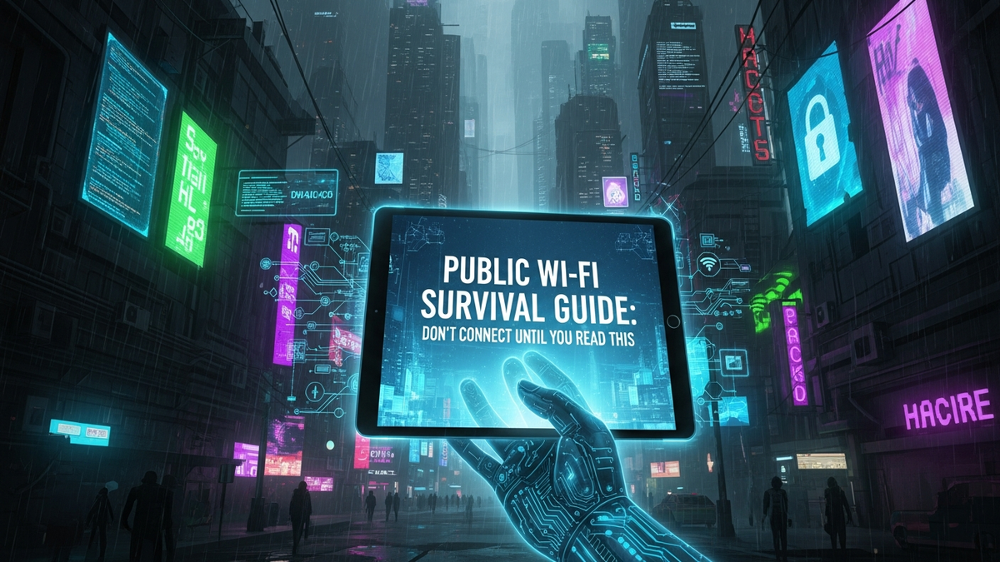

Alright, listen up. I've been staring at network logs and patching systems for fifteen years, and one thing I can tell you for absolute certain is that "free public Wi-Fi" often comes with a hidden, hefty price tag. That tempting, open network at your favorite coffee shop or airport isn't a gift; it's a digital Wild West, and if you're not careful, you're walking into it completely unarmed.
Most people connect to public Wi-Fi without a second thought, blissfully unaware of the digital sharks swimming in those open waters. They think, "It's just Wi-Fi, what's the big deal?" The big deal is that your sensitive data – your passwords, your banking info, your private conversations – could be exposed to anyone with a little know-how and malicious intent.
This isn't about fear-mongering; it's about equipping you with the brutal truth and the practical tools to protect yourself. Consider me your digital bodyguard for the next few minutes. We're going to walk through exactly why public Wi-Fi is dangerous and, more importantly, precisely what you need to do to survive it without getting burned. Don't touch that connect button until you've absorbed every word of this guide. Your digital life depends on it.
When you connect to public Wi-Fi, you're essentially joining a party where everyone is a stranger, and nobody is checking IDs at the door. Unlike your secure home network, which typically has a password and encryption, public Wi-Fi is often wide open, or minimally protected, making it a playground for cybercriminals.
The primary threat is something called a Man-in-the-Middle (MITM) attack. Imagine you're trying to whisper a secret to a friend, but someone is standing directly between you, listening to every word and even changing what you say. That's an MITM attack. An attacker can position themselves between your device and the internet, intercepting all your traffic. They can see what websites you visit, what you type, and even steal login credentials if the connection isn't properly encrypted.
Another major risk is packet sniffing. Every piece of data you send over the internet is broken down into small "packets." On an unsecured public network, these packets are like postcards sent without envelopes. A hacker with a simple, readily available tool can "sniff" these packets out of the air, reading their contents. If you're accessing a website that uses old HTTP instead of secure HTTPS, those postcards are completely legible, revealing your usernames, passwords, and other personal information in plain text.
Beyond just eavesdropping, public Wi-Fi networks are ripe for malware injection. Attackers can exploit vulnerabilities in your device's operating system or applications to push malicious software onto your system. This could be anything from a keylogger that records your keystrokes to ransomware that locks up your files until you pay a ransom. Because there's no proper network segmentation – meaning you're on the same broadcast domain as everyone else – an attacker can easily target devices connected to the same public network.
Then there's the "Evil Twin" attack. This is where a hacker sets up a fake Wi-Fi hotspot with a name identical or very similar to the legitimate one (e.g., "Starbucks_Free_Wi-Fi" instead of "Starbucks_Official"). Your device, looking for a familiar network, might automatically connect to this malicious hotspot. Once connected, the attacker has full control over your internet traffic, redirecting you to fake login pages or injecting malware directly into your browser sessions. It's a highly effective and terrifyingly simple trick.
Even networks with a password aren't always safe. That password might only be protecting access to the network, not encrypting the traffic between devices on the network itself. Plus, if everyone at the coffee shop knows the password, it's not really a secret, is it? It's just a minor hurdle, not a security barrier. The fundamental problem with public Wi-Fi is the lack of trust. You have no idea who else is connected, what their intentions are, or what security measures (if any) the network administrator has implemented.
Finally, let's talk about DNS poisoning. Your device uses a Domain Name System (DNS) to translate website names (like google.com) into IP addresses (like 172.217.160.142). On a compromised public Wi-Fi network, an attacker could manipulate the DNS server to redirect you to malicious websites even when you type in a legitimate URL. You think you're going to your bank's website, but you're actually landing on a convincing fake designed to steal your credentials. This level of deception is why you absolutely cannot take public Wi-Fi at face value.
Okay, so the public Wi-Fi landscape is a minefield. But you don't have to stay home. You just need to suit up. Think of your device as a medieval knight, and these tools are its plate armor. Without them, you're going into battle in your pajamas.
The absolute cornerstone of your public Wi-Fi defense is a **Virtual Private Network (VPN)**. A VPN is like building a private, encrypted tunnel directly from your device to a secure server somewhere else on the internet. All your data travels through this tunnel, completely hidden from anyone on the public Wi-Fi network. Even if a hacker is sniffing packets or running an MITM attack, all they'll see is encrypted gibberish. It's an armored car for your data, making it virtually impossible for eavesdroppers to see what you're doing. You need a reputable, paid VPN service. Free VPNs are often dangerous; they might log your data, sell it, or even inject ads or malware. Look for providers with a strict "no-logs" policy and strong encryption standards. Always turn your VPN on *before* you connect to any public Wi-Fi, and keep it on for the entire duration of your session.
Next up, your **firewall**. Think of your firewall as a bouncer at a very exclusive club. It decides what traffic is allowed to enter and exit your device. Both Windows and macOS have built-in firewalls, and they are usually enabled by default. Do not, under any circumstances, turn your firewall off. On Windows, ensure "Windows Defender Firewall" is active. On macOS, check "Firewall" in Security & Privacy settings. Make sure it's configured to block incoming connections unless specifically allowed. This prevents other devices on the public network from directly trying to access your computer.
Keeping your **software updated** is non-negotiable. Operating systems (Windows, macOS, Android, iOS), web browsers (Chrome, Firefox, Edge, Safari), and all your applications frequently release updates. These updates aren't just for new features; they often contain critical security patches that fix vulnerabilities attackers could exploit. Running outdated software is like leaving a back door wide open for criminals. Enable automatic updates wherever possible, and manually check for updates regularly. A known vulnerability is an easy target for any hacker worth their salt.
Your web browser also needs attention. Ensure your browser is set to prioritize **HTTPS connections**. Most modern browsers do this by default, but you can double-check. HTTPS (Hypertext Transfer Protocol Secure) encrypts the communication between your browser and the website you're visiting. You'll see a padlock icon in your browser's address bar. While a VPN encrypts your entire connection, HTTPS encrypts individual website sessions. Together, they form a powerful defense. Even with a VPN, you should still prefer HTTPS sites because it adds another layer of security, especially against advanced threats that might try to intercept traffic *after* it exits your VPN server.
💡 Expert IT Tip: For an extra layer of browser security, consider installing a browser extension like "HTTPS Everywhere" (though many modern browsers now default to HTTPS). Even better, switch to a privacy-focused browser like Brave or Firefox with its Enhanced Tracking Protection enabled. These browsers often include built-in features that block trackers, ads, and even upgrade insecure HTTP connections to HTTPS automatically, giving you a more secure and private browsing experience right out of the box.
Finally, disable **file sharing** and **network discovery** features. On Windows, this means turning off "Network Discovery" and "File and Printer Sharing." On macOS, disable "File Sharing," "Screen Sharing," and "Remote Login" in the Sharing preferences. These features are designed for convenience on trusted home networks, allowing other devices to see and access your files. On a public network, they're an open invitation for snoopers and attackers to browse your documents or even install malware directly onto your machine. Always assume every other device on a public network is hostile until proven otherwise, which is never.
Before you even think about tapping that "Connect" button, you need to engage your brain. Connecting to public Wi-Fi isn't a mindless act; it's a strategic maneuver. Your first line of defense isn't software; it's your own vigilance and smart habits.
**Verify the network name.** This is absolutely critical. Do not just connect to the first "Free_Wi-Fi" you see. Attackers frequently set up "Evil Twin" hotspots with names that mimic legitimate ones (e.g., "Airport_Free_WiFi" instead of "Airport_Official_WiFi"). Always ask a staff member for the exact, official Wi-Fi network name. If you're at an airport, check the official signs. Don't assume. If the name sounds generic or slightly off, it's a huge red flag. Connecting to an Evil Twin gives the attacker full control over your traffic, making even a VPN less effective as they're already inside your tunnel.
**Disable auto-connect features.** Your phone or laptop loves convenience, often remembering and automatically connecting to networks it's seen before. This is a massive security risk on public Wi-Fi. Go into your Wi-Fi settings and turn off "Auto-Join" or "Connect automatically" for all public networks. Better yet, "forget" any public networks you've connected to in the past. This prevents your device from blindly jumping onto a potentially malicious network that simply shares a familiar name.
**Prefer your mobile hotspot.** Your phone's cellular data connection is generally far more secure than public Wi-Fi. When you tether to your phone, you're creating a private, encrypted network between your device and your phone, which then connects to your cellular provider's secure network. It's a closed system, much harder for external attackers to penetrate. If you have enough data, this should always be your go-to option when you're out and about and need internet access. Think of it as your personal, portable, armored internet connection.
Secure your digital wealth with the world's most trusted hardware wallets.
GET YOUR WALLET NOW**Disable file sharing and network discovery.** I mentioned this in the tools section, but it bears repeating as a habit. Before you connect, quickly check your settings. On Windows, go to Network and Sharing Center, then "Change advanced sharing settings," and turn off "Network discovery" and "File and printer sharing" for public networks. On macOS, go to System Settings > General > Sharing, and ensure everything is toggled off, especially "File Sharing." These features are for trusted home networks, not for sharing your digital life with strangers.
**Use strong, unique passwords and enable Two-Factor Authentication (2FA) everywhere.** While this isn't specific to public Wi-Fi, it's an absolutely essential safety net. Even if an attacker somehow manages to sniff out a password, 2FA (like a code sent to your phone) will prevent them from logging in. This is your last line of defense if all else fails. Make it a habit to use a password manager to generate and store complex, unique passwords for every account.
**Be wary of QR codes for Wi-Fi.** Some establishments offer QR codes to simplify connecting to their Wi-Fi. While convenient, verify the source of the QR code. A malicious actor could easily place a fake QR code that connects you to an Evil Twin network instead of the legitimate one. If in doubt, manually enter the network name and password obtained directly from staff.
**Don't connect if you don't absolutely need to.** This is the simplest and most effective advice. If you're just scrolling social media or reading news, maybe it can wait until you're on a trusted network. Every connection is a potential risk. Minimize your exposure by only connecting when necessary and for as short a duration as possible.
Now that we've covered what you *should* do, let's talk about what you absolutely, positively, under no circumstances should ever do on public Wi-Fi. This is your "Do Not Disturb" list for sensitive digital activities. Break these rules, and you're practically handing your data to the bad guys on a silver platter.
**Never, ever access banking websites or financial apps.** This is the golden rule. Even with a VPN, the risk is simply too high. When you log into your bank, you're transmitting your most sensitive financial information. If there's any weakness in the Wi-Fi security, your device, or even your VPN service, your money is on the line. Wait until you're on your secure home network or use your mobile hotspot for any financial transactions. The potential for identity theft and financial loss is not worth the convenience.
**Avoid logging into work accounts or accessing sensitive company data.** Your employer's data is not just your data; it's a corporate asset. A breach via public Wi-Fi could have severe consequences for your company, including financial penalties, reputational damage, and legal issues. Many companies have strict policies against accessing sensitive data on unsecured networks for precisely this reason. If you absolutely must work remotely, use your company's official VPN (which is usually more robust than a personal one) or your mobile hotspot.
**Do not download or update software.** This is a huge no-no. When you download a file or update an application on public Wi-Fi, an attacker could intercept the download and replace the legitimate software with a malicious version. This is known as a "drive-by download" or "watering hole" attack. You think you're getting a security patch, but you're actually installing malware. Always perform software updates on a trusted, secure network. The same goes for downloading any new applications or files that you haven't thoroughly vetted.
**Steer clear of public USB charging stations.** You see them in airports, coffee shops, and malls. They look convenient, but they are a trap known as "juice jacking." A compromised charging station can not only charge your device but also secretly install malware, copy data, or even lock your device. Always use your own charger plugged into a wall outlet, or carry a portable power bank. Your phone's data port is a two-way street; don't connect it to an unknown source.
**Don't enable Bluetooth pairing with unknown devices.** Similar to Wi-Fi, Bluetooth can be exploited. Keeping your Bluetooth discoverable in public makes your device visible to potential attackers who could attempt to pair with it and exploit vulnerabilities. While less common than Wi-Fi attacks, it's still a risk. Keep Bluetooth off unless you are actively pairing with a trusted device, and disable discoverability when not in use.
**Never use "remember me" or "keep me logged in" features.** On public Wi-Fi, this is an invitation for trouble. If an attacker gains access to your browser's cookies or session tokens, they could hijack your active sessions without needing your password. Always log out of accounts completely when you're done, especially on public networks. Force yourself to re-enter credentials every time; it's a minor inconvenience for major security.
**Avoid sharing files or using network-attached storage (NAS).** If you have any sort of network drive or cloud storage that's accessible via your local network, disable its accessibility entirely when on public Wi-Fi. Never transfer sensitive files between devices on a public network. This leaves your data completely exposed to anyone else on that network who is looking for an easy target.
Okay, you've survived your public Wi-Fi encounter. You followed all the rules, wore your digital armor, and avoided the forbidden list. But the job isn't quite done. Just like you'd wash your hands after touching something questionable, you need to clean up your digital footprint after disconnecting from public Wi-Fi. This post-connection hygiene is crucial for ensuring no lingering nasties have hitched a ride.
First, and most importantly, **disconnect properly**. Don't just close your laptop lid or walk away. Manually disconnect from the Wi-Fi network. On your phone, go into Wi-Fi settings and choose "Forget This Network" for the public Wi-Fi you were just on. This prevents your device from automatically reconnecting to it or a similarly named Evil Twin in the future. It's a simple step that significantly reduces future risk.
Next, **clear your browser cache and cookies**. Your browser stores temporary files (cache) and small data snippets (cookies) from websites you visit to speed up loading times and keep you logged in. While generally harmless, on a public network, these could potentially be exploited by sophisticated attackers if they managed to inject malicious code into your browser session. Clearing them removes any potentially compromised data remnants. Go into your browser settings and look for options to clear "Browsing data," "Cache," and "Cookies."
💡 Expert IT Tip: After using public Wi-Fi, especially if you felt uneasy about the connection, run a full scan with a reputable antivirus/anti-malware program. Tools like Malwarebytes or the built-in Windows Defender can often catch things that might have slipped through. This is an extra layer of paranoia that can save you a huge headache. Make sure your antivirus definitions are up-to-date before running the scan.
**Review your account activity.** This is a proactive measure. After a few days, take a moment to quickly check your bank statements, credit card transactions, and email login history for any unusual activity. Many services, like Google and Microsoft, allow you to see recent sign-ins and from what locations. If you see a login from a strange city or country, it's a massive red flag. This vigilance can help you detect a breach early, allowing you to react swiftly.
**Change passwords if you suspect a breach.** If you notice anything suspicious – an unexpected transaction, an email notifying you of a login from an unknown device, or simply a gut feeling that something isn't right – change your passwords immediately, starting with your most critical accounts (email, banking, social media). Do this from a secure, trusted network (like your home Wi-Fi or mobile hotspot), and enable 2FA if you haven't already. Don't wait; every minute counts when a hacker has access to your accounts.
Finally, consider **rebooting your device**. A simple reboot can often clear out temporary memory (RAM) and close any lingering processes that might have been compromised. While not a magic bullet, it's a good practice, especially if you feel your device might have been exposed to something nasty. It's like resetting the table after a meal, ensuring no crumbs are left behind for pests.
So, there you have it. The brutal truth about public Wi-Fi isn't pretty, but armed with this knowledge, you're no longer a sitting duck. You now understand the risks, possess the digital armor, know the smart habits, and understand the crucial post-connection cleanup. This isn't about being paranoid; it's about being prepared, pragmatic, and proactive in a world where your digital identity is constantly under
Don't wait for the headlines. Our Private Telegram Channel delivers real-time AI security updates and digital wealth strategies before they go viral. Stay protected. Stay ahead.
⚡ JOIN THE 1% NOWNo sign-up required. Instantly check risks, analyze AI text, or calculate your digital finances.